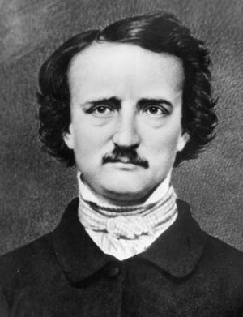

El Cansino Histórico
 De: La Frikipedia, la enciclopedia extremadamente seria.
De: La Frikipedia, la enciclopedia extremadamente seria.
De la serie grandes personajes:
¡De' pacico conmigo! (
es el de la derecha)
| Nacimiento
|
No se sabe cuándo, ya que cada viernes está en un siglo distinto.
|
| Muerte
|
16-04-2010 d.C.
|
| Ocupación
|
La viña.
|
| Nacionalidad
|
Se le ve español aunque cada vez aparezca en un lugar distinto.
|
| Malo o bueno
|
Si eres famoso, malo.
|
| Atentados contra la humanidad
|
Cansar, invitarte a unas gordas, pedirte autógrafos, insultar...
|
| Religión
|
Cansinismo.
|
| Notas
|
¡Ah usté a la mierda!
|
«¡Ah' usté a la mierda!»
~ El Cansino Histórico mandándote a la mierda
«¡Pregonao! ¡Mugroso! ¡Harto sopas! "La microbiología"... ¿Qué importancia tiene eso, si ni se ven los bichos? "Pasteurizar la leche"... ¡Pero si ya la cocía mi madre, cuando era pequeño, y no le hicieron monumentos ni calles! ¡Ansia rota! ¡Aaaaahhhhyyy! ¡Aaaahhhy! ...¡Zumayo! ¿Qué? ¡A ver si viá tener que calentarte el hocico un poco! Como vaya con la de esquilar los borricos, esa barbeja que tienes te la viá a repilar bien repilá. ¡Violón! ¡Mugroso! ...¡Casca!»
~ El Cansino Histórico insultando a Louis Pasteur
El Cansino Histórico es un nuevo héroe capaz de viajar en el espacio-tiempo para conocer a diversos personajes de la historia e invitarlos a cerveza. Si tú eres el desafortunado, más te vale aceptar la invitación, porque de lo contrario su ánimo cansino se tornará en furia y sufrirás las consecuencias. A día de hoy, y sobre todo debido a su cansinismo, nadie ha aceptado sus cervezas, con su consiguiente resultado.
El Cansino Histórico
Personaje de la serie de José Mota hecho para que la gente el viernes por la noche después de una semana sin dormir estudiando para el maldito control de historia se regocije al ver como el Cansino Histórico humilla al maldito tipo que te ha hecho sufrir tanto estudiando. En general, para criticar el típico pesao que empieza yendo de colega y te acaba mandando a la mierda.
Características
El Cansino Histórico es un personaje peculiar creado a partir del ADN de José Mota. Siempre va vestido con un sombrero, camiseta blanca con capote marrón, pantalones marrones más claros y zapatos de viña. A veces lleva un rastrillo, una azada u otra herramienta de campo, aunque no siempre. En su última aparición llevó una chaqueta de pastorcillo, la cual sería la primera y última vez que la llevó. Trabaja en su viña de Alcafrán y su mujer es "La Cloti". Se ignora si el cansino histórico es un viajero del tiempo o tiene dicha habilidad, pues aunque los personajes a los que molesta son de distintas y lejanas épocas él siempe viste, habla y trabaja de la misma forma, su mujer siempre es "La Cloti" y siempre tiene un campo de su propiedad. Esos hechos sólo tienen esa explicación o que se reproduce por clonación.
Le gusta aburrir a gente famosa. Siempre sigue un ejemplo de conversación, que es más o menos esta, protagonizada por Vincent Van Gogh:
- Cansino: Perdone, ¿Vincent Van Gogh?
- Vincent Van Gogh: Sí.
- Cansino: ¿Pero Vincent Van Gogh?
- Vincent Van Gogh: Sí, soy yo.
- Cansino: ¡Valgame el señor! ¿Puedo saludarle?. Esque me ha parecido verle ahí, que venia de la viña, a lo lejos y digo no puede ser y si que es fíjate. Le admiro mucho, ¿sabe? de verdad se lo digo. Qué le iba a decir, en mi casa en un altar.
- Vincent Van Gogh: ¡Muchas gracias!
- Cansino: Es que es un artista usted. "La Habitación de Arles", "La noche estrellada"... Ya verá cuando se lo diga a la Cloti como se va a poner. Que le iba a decir, ¿tiene algo ahí para firmarme?
- Vincent Van Gogh: Ah pues no, esto es mío, no lo puedo usar...
- Cansino: Vaya... No tiene... Que le iba a decir, le invito yo al bar que tiene ahí en la esquina mi cuñado y nos tomamos unas gordas.
- Vincent Van Gogh: Ah, es que no puedo, no tengo tiempo...
- Cansino: Que se lo digo de verdad, que tengo yo el gusto hombre
- Vincent Van Gogh: No, no, es que no puedo...
- Cansino: Venga hombre, ¿me las vas a rechazar? que tardamos mas en discutir que en ir.
- Vincent Van Gogh: Pero que no tengo tiempo...
- Cansino: Que si hombre, si puedes esperar, venga,pijo. (lo agarra del brazo)
- Vincent Van Gogh: ¡¡¡Suelta, hombre!!!
- Cansino (montando en cólera): ¡Despacico conmigo, eh! ¡Despacico conmigo...! ¡Que tiro de cheira p'arriba y te echo las tripas en un canasto! Te he dicho que si quieres una cerveza; no quieres... ¡¡Ah' usté a la mierda!! (y mientras Van Gogh se va) ¡So mugroso, piojoso, sarnoso, harto sopas, zumayo, pregonao, vaya un zamarro, (mascullando) nalgas tunas, pecho tordo, cabeza alberca! ¡Pinturas flamencas, sí! ¡Na más inventá! (se pone a bailar una chorrada flamenca) ¡"Mírala cara a cara que es la primera... Que es la primera"! ¡"Mírala cara a cara que es la..." Y ya está! (deja de bailar) ¡Pero qué pintura es esa, "La Habitación de Arlés", si es que se os escapan las mejores, si esa cama esta viciá, viciá pa la derecha! ¡Cálzala d'abajo! ¡Gástate los cuartos! ¡Pelo pimentón! ¡Seguro que te caíste de boca a un puchero de azafrán, y no te lo han dicho! (bailoteando) ¡Nooo, no te lo han dicho! ¡So pregonao! "El Anochecer de Van Gogh"... ¡Pero qué anochecer si era de día! ¡Que ves menos que un gato yeso! ¡So mugroso! Te he dicho que si querías cerveza, no quieres... ¡Ve'ste a la mierda! ¡Vete a dormir, que no pintas nada aquí, que hay pulgas en el colchón! Ya te guardarás de que nos encontremos otra vez. No dirás que no te lo digo. ¡Ah' usté a la mierda!
El fin del Cansino
Después de un largo historial de gente aburrida por el Cansino, este encontró su fin ante Velázquez: [1].
Gente a la que El Cansino ha aburrido
 Este individuo fue
owneado por el poder del Cansino Histórico.
Autor(es):
- ElInventor
- Conan
- Sarry52
- Sygma
- Butters2
- Antichikilicuatre
- Cutrupe
- Cebolla771
- Dumbass
Frikipedia 2005-2016, Licencia
GFDL 1.2 - Extraído por FrikiLeaks